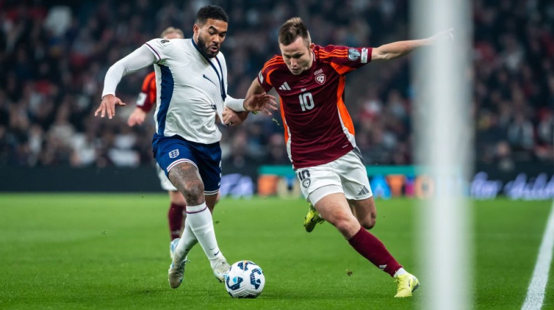

<!DOCTYPE html>
<html lang="en">
</html>
<head>
    <meta charset="utf-8"/>
    <link rel="stylesheet" href="style.css"/>
    
</head>
<h1>Futbols</h1>

<p>
Futbols ir pasaulē vispopulārākais sporta veids, kuru spēlē divas komandas, katrā ir 11 spēlētāji. Mērķis ir gūt vairāk vārtu nekā pretiniekiem. Futbols ir ļoti populārs visā pasaulē, īpaši Eiropā, Dienvidamerikā un Āfrikā.
</p>

<h2>Kā spēlē futbolu?</h2>
<ul>
    <li><strong>Komandas:</strong> Katru komandu veido 11 spēlētāji (ieskaitot vārtsargu).</li>
    <li><strong>Spēles mērķis:</strong> Gūt vārtus, sitot bumbu pa pretinieku vārtiem.</li>
    <li><strong>Spēles ilgums:</strong> Parasti 90 minūtes, sadalītas divos 45 minūšu puslaikos.</li>
    <li><strong>Noteikumi:</strong> Bumbu drīkst piesist ar kāju, galvu vai krūtīm, bet nav atļauts izmantot rokas (izņemot vārtsargu).</li>
</ul>

<h2>Populāri turnīri</h2>
<ul>
    <li><strong>FIFA Pasaules kauss:</strong> Galvenais futbola turnīrs, kas notiek reizi 4 gados.</li>
    <li><strong>UEFA Čempionu līga:</strong> Eiropas klubu labāko komandu turnīrs.</li>
    <li><strong>Eiropas čempionāts (Euro):</strong> Eiropas izlašu čempionāts, kas notiek katru otro gadu.</li>
    <li><strong>Copa América:</strong> Dienvidamerikas valstu izlašu sacensības.</li>
    <li><strong>Anglijas Premjerlīga:</strong> Viena no spēcīgākajām futbola līgām pasaulē.</li>
</ul>

<h2>Slaveni spēlētāji</h2>
<ul>
    <li><strong>Lionels Mesi:</strong> Argentīnas futbola zvaigzne, vairākas reizes uzvarējis FIFA Pasaules Gada Spēlētāja balvā.</li>
    <li><strong>Krištianu Ronaldu:</strong> Portugāles futbolists, uzvarētājs vairākos Čempionu līgas turnīros un 5 reizes labākais spēlētājs pasaulē.</li>
    <li><strong>Diego Maradona:</strong> Futbola leģenda no Argentīnas, kuru uzskata par vienu no visu laiku labākajiem spēlētājiem.</li>
    <li><strong>Zinedins Zidans:</strong> Francijas futbolists un treneris, kas ieguvis daudzus titulētos turnīros.</li>
</ul>


<h2>Futbola fakti</h2>
<ul>
    <li><strong>Pasaules kauss:</strong> Ir visvairāk skatītais sporta notikums pasaulē.</li>
    <li><strong>Futbols:</strong> Ir vairāk nekā 250 miljonu cilvēku iecienīts sporta veids visā pasaulē.</li>
    <li><strong>Futbola laukuma izmēri:</strong> Garums var būt no 90 līdz 120 metriem, platums no 45 līdz 90 metriem.</li>
</ul>

<h2>Futbols un statistika</h2>
<ul>
    <li><strong>Pasaules kausa uzvarētāji:</strong> Brazīlija (5 reizes), Vācija (4 reizes), Itālija (4 reizes).</li>
    <li><strong>Visvairāk gūtie vārti:</strong> Miroslavas Klosa (Vācija) – 16 vārti Pasaules kausa turnīros.</li>
    <li><strong>Pasaules labākie klubi:</strong> FC Barcelona, Real Madrid, Bayern Munich.</li>
</ul>


    
    <p><button class="button button2" id="sportsBtn" onclick="poga3()">sports</button></p>
    <script src="script.js"></script>
</body>
</html>